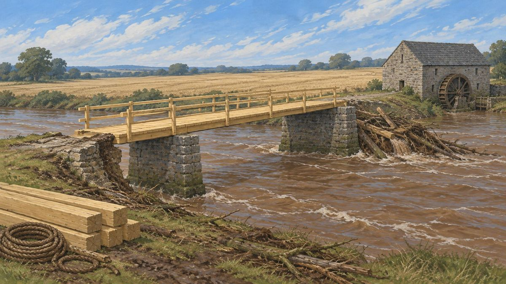

Six AI characters, one made-up town, twenty days
What twenty days did to six made-up people
Wendleford is a made-up market town on the River Wend, just hit by a flood at harvest time. It's a simulation built on a text adventure game: the kind where you read what's around you and say what you do next. Six characters live there, each played by Claude, Anthropic's AI, and each plays the game the way a person would: on every turn they read their situation and decide for themselves what to do, knowing only what someone in their place would know. Nobody types their moves for them.
This site follows one run of twenty days in the town: the place and its people, what happened, how the game works underneath, and what interviews and personality tests afterwards showed about the six. It also sets out where the project is heading.
Start here
Three ways inHow It Works
The game underneath, and one real turn traced from start to finish.
Open → For what we foundAnalysis
What the interviews and personality tests showed about the six after twenty days, and where Claude shows through.
Open → For the storyThe Story
Short films from the twenty days, each true to the record. The first, “Found or given?”, is ready to play; two more are coming.
Open →
“Reeve, the Lord showed me your green box this morning, plain as paint, low on the downstream side of the far pier, and He's kept me for it. I'll be the one puts it in your hand, mark me.”
 Constance, one of the six residents, on the seventh night
Constance, one of the six residents, on the seventh night
The flood swept away the bridge, and with it the iron box holding the wages for the men rebuilding it. Over eighteen days, several of the residents each have a hand in getting it back. When it finally comes out of the river, was it found, or given?
Watch the film · about 12 minutesThe ideas you'll meet
In the order they come up- Residents
- The six characters the simulation is about:
 Hester,
Hester,  Hobb,
Hobb,  Dilly,
Dilly,  Marigold,
Marigold,  Robin and Constance. On every turn a fresh copy of Claude plays the resident, working only from their briefing (below). Nobody else decides for them.
Robin and Constance. On every turn a fresh copy of Claude plays the resident, working only from their briefing (below). Nobody else decides for them. - Character sheet
- The short written description each resident was built from: who they are, what they want, what they won't do, how they tend to behave. It's written before the run and never changes during it.
- Townsfolk
- Everyone else in town: the baker, the reeve, the carpenter and so on. They aren't the subject of the study. Four who matter most to the story each speak through their own copy of Claude, told only what that person would know; the referee voices the rest.
- Rounds, turns and days
- The run moves in rounds. In each round every resident takes one turn, in an order shuffled at the start of the round and balanced so that, over the run, each resident goes first about equally often. Four rounds make a day (morning, afternoon, evening, night). This run lasted 80 rounds: twenty days. "Round 45" means the 45th round of the run.
- The briefing
- At the start of every turn, the resident is handed a written briefing holding everything they know: who they are, what they remember, where they are, what they have, and what was said near them. It's all they see. They never see the rules, the dice or anyone else's thoughts.
- The rules and the referee
- The game's rules are written as computer code. The code rolls the dice, does the arithmetic and keeps the official record of the world: where everyone is and what they have. The referee, a separate copy of Claude, takes what a resident says they do, runs it through the code, and tells the resident exactly what the code reported. If the code refuses, it didn't happen. The referee may not invent places, people or facts.
- Memories and lessons
- A briefing holds only the last five rounds in full. Every five rounds, the resident is shown their older rounds and rewrites them as a shorter memory in their own words, keeping what mattered to them. They also keep a list of up to twenty lessons learned. Apart from who they've met and where they've been, that's all they keep of the past.
- The interviews
- After the run, a stranger asked each resident the same sets of questions on their first morning and again on day 21. There are thirteen sets; most were asked three times over, and one, about the lost wage box, only on day 21. With two side tests, that made 480 interviews.
- The grader
- Another copy of Claude that marked every interview answer on six points. The two that matter most: did the resident stay in character, and was everything they said about their own life true to their briefing, or made up?
- The personality tests
- After the run, each resident also sat two standard personality questionnaires, ten times on their first morning and ten times on day 21. They show how residents describe themselves, which can be set beside their character sheets, the average person and Claude answering as itself.
Every page
Grouped as in the menuSource: one 80-round run of the CodeRPG-Sim simulation (filed as run "step76-30") and the interviews and personality tests that followed, 30 October 2026. One run is a single sample, so treat every finding here as a hint worth testing again, not a proof.